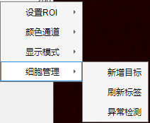
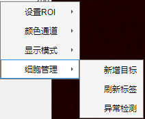

3.2.5 合并通道
 合并源用于当前颜色通道配准质量可视化，将配准结果与模板帧合并在同一幅图像。 合并模式可选 无，红—青蓝，绿—洋红。两种颜色中前者为模板，后者为配准结果。 注1：当使用合并源时，浏览源组件将处于锁定状态，直至合并模式切换为 无 。 注2：对任意颜色组合，当配准与模板完全重合时将成为灰度图，此时配准质量最高。因此您可以通过图像中灰色部分比例判断当前配准质量。

合并源用于当前颜色通道配准质量可视化，将配准结果与模板帧合并在同一幅图像。 合并模式可选 无，红—青蓝，绿—洋红。两种颜色中前者为模板，后者为配准结果。
注1：当使用合并源时，浏览源组件将处于锁定状态，直至合并模式切换为 无 。
注2：对任意颜色组合，当配准与模板完全重合时将成为灰度图，此时配准质量最高。因此您可以通过图像中灰色部分比例判断当前配准质量。